文字
背景
行間


カテゴリ:部活動
第71回秋季千葉県高等学校野球大会応援よろしくお願いします。

 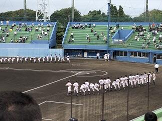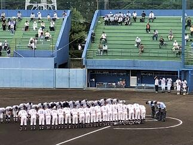
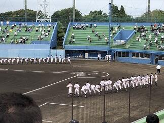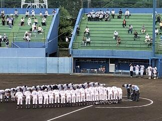 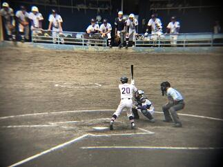
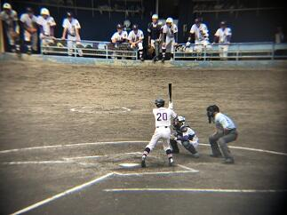


 今日は、平成３０年度第71回秋季千葉県高等学校野球大会の第2回戦が各地で行われました。本校の第１回戦は９月２２日にナスパ･スタジアムで行われた松戸国際戦でした。延長14回の激戦を７－６で制して本日、本校の第2回戦は強豪千葉経済大学付属高等学校（以下 千葉経済）との試合となりました。本日も多くの保護者・ご家族の皆様とOBの方々が応援するなか、佐倉高校の先攻で始まった試合ですが、1回裏に千葉経済に1点先攻されましたが、2回表にすぐ2点取って1点差で5回表までリードをしていました。しかし、5回裏に千葉経済に2点取られて逆に1点リードのまま６回が終わりました。７回の表に、この試合を決定する運命の２点を取り返して１点リードし、６回からリリーフで出場した吉岡選手が、６回から９回まで０点で抑えて４－３で千葉経済に勝利しました。これでベスト１６入りです。今日先発の東海林選手、リリーフの吉岡選手を堅守でバックアップした守備力と大切な場面でつないで得点する攻撃力がかみ合った良い試合だったと思います。応援に来ていただいた保護者・ご家族やOBの皆様、本当にありがとうございました。次のベスト８決めとなる第３回戦は、２９日（土）に柏の葉公園野球場の第１試合で行われる習志野戦です。是非とも皆さんで応援に来ていただけると幸いです。
今日は、平成３０年度第71回秋季千葉県高等学校野球大会の第2回戦が各地で行われました。本校の第１回戦は９月２２日にナスパ･スタジアムで行われた松戸国際戦でした。延長14回の激戦を７－６で制して本日、本校の第2回戦は強豪千葉経済大学付属高等学校（以下 千葉経済）との試合となりました。本日も多くの保護者・ご家族の皆様とOBの方々が応援するなか、佐倉高校の先攻で始まった試合ですが、1回裏に千葉経済に1点先攻されましたが、2回表にすぐ2点取って1点差で5回表までリードをしていました。しかし、5回裏に千葉経済に2点取られて逆に1点リードのまま６回が終わりました。７回の表に、この試合を決定する運命の２点を取り返して１点リードし、６回からリリーフで出場した吉岡選手が、６回から９回まで０点で抑えて４－３で千葉経済に勝利しました。これでベスト１６入りです。今日先発の東海林選手、リリーフの吉岡選手を堅守でバックアップした守備力と大切な場面でつないで得点する攻撃力がかみ合った良い試合だったと思います。応援に来ていただいた保護者・ご家族やOBの皆様、本当にありがとうございました。次のベスト８決めとなる第３回戦は、２９日（土）に柏の葉公園野球場の第１試合で行われる習志野戦です。是非とも皆さんで応援に来ていただけると幸いです。 平成３０年度関東高等学校カヌー選手権選抜大会（その3）

 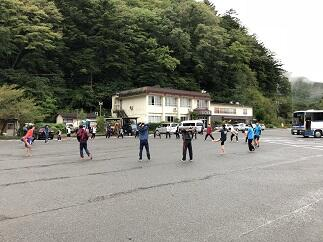
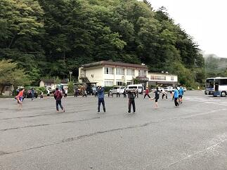


 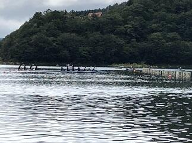
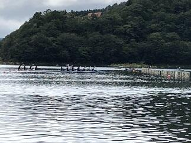 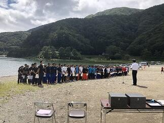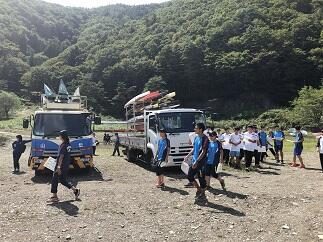
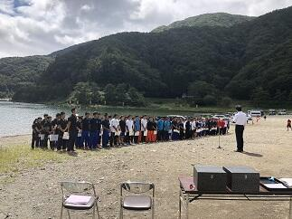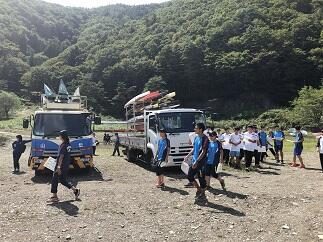 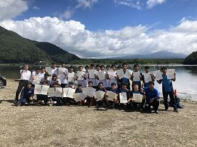今日は決勝です。朝6;00の段階では雨は止んでいます。このまま天候が持ってくれてれば良いコンディションで競技が行えると思います。生徒たちは、予定していた朝のトレーニングメニュウを元気に行っていました。（朝６：００段階）
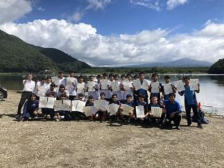今日は決勝です。朝6;00の段階では雨は止んでいます。このまま天候が持ってくれてれば良いコンディションで競技が行えると思います。生徒たちは、予定していた朝のトレーニングメニュウを元気に行っていました。（朝６：００段階）お陰様で午前中、雨だけでなく風も無くて、とても良いコンディションのもとで競技を行うことができました。
決勝に進出した佐倉高校のすべての選手が入賞するとともに、高校別の総合成績でも男女とも総合２位となり、閉会式で表彰されました。これも菅澤先生、西山先生、宮代先生、加藤先生や引退した３年生と今まで頑張ってきた成果が結果として表れたのだと思います。本当におめでとうございます。各都県の素晴らしい選手たちとの競技を終えて解決すべき課題や目標ができて、またひと回り大きくなったのではないかと思います。菅澤先生、西山先生、選手の皆さん本当にお疲れ様でした。また、応援に来ていただいた保護者や家族の皆さんありがとうございました。
平成３０年度関東高等学校カヌー選手権選抜大会（その2）


 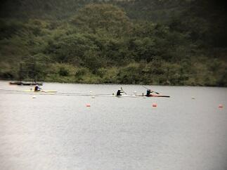今日は、大会初日です。精進湖では朝６：００の段階では天候は雨でした。午前中は、強い雨は降りませんでしたがかなり濡れる雨でした。午後からは雨が止む時もあり風が強くなかったことが幸いでした。また、何とか生徒たちの頑張りもあって本日の全日程を無事に終えることができました。これも山梨県カヌー協会の先生方や関東高体連カヌー専門部の各都県の先生方のおかげであるとこころより感謝いたします。また、応援に来てくださった保護者の皆様ありがとうございました。明日はすべての種目の決勝が行われます。佐倉高校も男子カヤックシングル以外のすべての種目で決勝に進出しました。本当に頑張ったと思います。
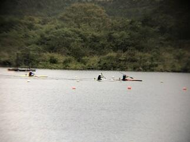今日は、大会初日です。精進湖では朝６：００の段階では天候は雨でした。午前中は、強い雨は降りませんでしたがかなり濡れる雨でした。午後からは雨が止む時もあり風が強くなかったことが幸いでした。また、何とか生徒たちの頑張りもあって本日の全日程を無事に終えることができました。これも山梨県カヌー協会の先生方や関東高体連カヌー専門部の各都県の先生方のおかげであるとこころより感謝いたします。また、応援に来てくださった保護者の皆様ありがとうございました。明日はすべての種目の決勝が行われます。佐倉高校も男子カヤックシングル以外のすべての種目で決勝に進出しました。本当に頑張ったと思います。明日も、引き続き今まで頑張ってきた自分と仲間を信じて力を発揮してもらいたいと思います。
平成３０年度関東高等学校カヌー選手権選抜大会（その１）


 平成３０年度関東高等学校カヌー選手権選抜大会が山梨県南都留郡富士河口湖町精進湖カヌー競技場で明日15日、明後日16日と開催されます。本日は、その大会の準備と合わせて関東高体連カヌー専門部秋季委員長会議や監督会議が行われました。また、天候については、あいにくと雨模様に加えて気温が上がらず風が吹くと防寒着がないとつらい一日でした。そんな中、生徒たちは運んできたカヌーの積み下ろし、艇の点検、活動拠点となるテントの設営などきびきびと支度を整え、明日からの競技に備えて念入りにフォームの点検や湖水の状況など確認しつつ練習を行っていました。大変充実した練習が行えたのではないかと思います。晴れていれば雄大な富士山に見守られながらの練習となったのですが、残念ながらお姿を拝むことはできませんでした。（上段右の写真参照）
平成３０年度関東高等学校カヌー選手権選抜大会が山梨県南都留郡富士河口湖町精進湖カヌー競技場で明日15日、明後日16日と開催されます。本日は、その大会の準備と合わせて関東高体連カヌー専門部秋季委員長会議や監督会議が行われました。また、天候については、あいにくと雨模様に加えて気温が上がらず風が吹くと防寒着がないとつらい一日でした。そんな中、生徒たちは運んできたカヌーの積み下ろし、艇の点検、活動拠点となるテントの設営などきびきびと支度を整え、明日からの競技に備えて念入りにフォームの点検や湖水の状況など確認しつつ練習を行っていました。大変充実した練習が行えたのではないかと思います。晴れていれば雄大な富士山に見守られながらの練習となったのですが、残念ながらお姿を拝むことはできませんでした。（上段右の写真参照）明日からの競技会が無事に行われ、参加する選手の皆さんが日ごろの練習の成果を存分に発揮できるよう祈念するとともに、選手の皆さんには競技を楽しんでもらいたいと思います。
野球部の皆さん感動をありがとう！！


 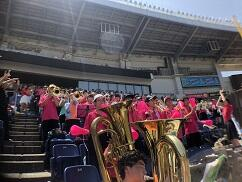
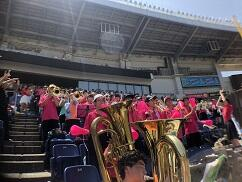


 今日９：１０よりZOZOマリンスタジアムで市立習志野高校との試合が行われました。選手の皆さんはこの猛暑のなか、集中力を切らさず本当にすばらしいプレーを続けてくれました。また、本校の応援委員会、吹奏楽部、先生、生徒、保護者の皆様による大応援団は気持ちが一体となり、最後まで勝利を信じて応援を続けることができました。何よりもこんなに気持ちよく応援ができる環境を作り出せるすばらしい人たちと一緒に応援できたことがとてもうれしかったです。
今日９：１０よりZOZOマリンスタジアムで市立習志野高校との試合が行われました。選手の皆さんはこの猛暑のなか、集中力を切らさず本当にすばらしいプレーを続けてくれました。また、本校の応援委員会、吹奏楽部、先生、生徒、保護者の皆様による大応援団は気持ちが一体となり、最後まで勝利を信じて応援を続けることができました。何よりもこんなに気持ちよく応援ができる環境を作り出せるすばらしい人たちと一緒に応援できたことがとてもうれしかったです。試合の結果は、習志野高校には一歩及ばなかったものの、この経験から多くのことを学ぶことができ、次のステップへ進むことができると思います。
この試合で野球部も応援団から力をもらったと思いますが、野球部が見せてくれた頑張りから応援団も多くの感動と喜びをいただきました。野球部の生徒の諸君、堀内先生、藤井先生本当にありがとうございました。また、応援してくださった皆様本当にありがとうございました。今後ともよろしくお願いいたします。
野球応援No.1


 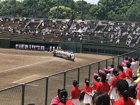
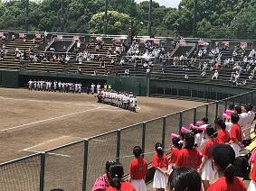
 本日７月１３日９：００から青葉の森公園野球場で、本校野球部の初戦が行われました。対戦相手は、県立四街道北高等学校でした。佐倉高校の先攻で始まりました。５回表に３点先取しましたが、その裏に１点返され、６回裏には２点取られ追いつかれました。７回表に１点取ってリードしたまま９回裏を迎えましが、ここで再度追いつかれてしまいました。延長に入ってすぐの１０回表に２点取って勝ち越しその裏は０点で抑えて勝利をつかむことができました。野球部の皆さんおめでとうございます。また、応援に駆け付けていただいた保護者の皆様、応援委員会、吹奏楽部の皆さんありがとうございした。
本日７月１３日９：００から青葉の森公園野球場で、本校野球部の初戦が行われました。対戦相手は、県立四街道北高等学校でした。佐倉高校の先攻で始まりました。５回表に３点先取しましたが、その裏に１点返され、６回裏には２点取られ追いつかれました。７回表に１点取ってリードしたまま９回裏を迎えましが、ここで再度追いつかれてしまいました。延長に入ってすぐの１０回表に２点取って勝ち越しその裏は０点で抑えて勝利をつかむことができました。野球部の皆さんおめでとうございます。また、応援に駆け付けていただいた保護者の皆様、応援委員会、吹奏楽部の皆さんありがとうございした。このまま予定通り日程が進行すれば、７月１５日に市立習志野高等学校との試合がZOZOマリンスタジアムの第１試合に予定されていますので、応援のほどよろしくお願います。
野球応援練習

 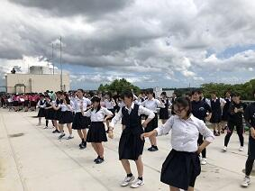
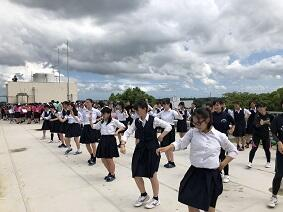


 本日、13:30から気持ちのこもった野球応援の練習が応援委員会と吹奏楽部、野球部員を中心に行われました。ここに参加してくれた生徒の諸君は、ここ一か月、文化祭の準備、自分の部活動、第２回定期考査の準備等あるなか、頑張る友人のために、応援練習を続けてきてくれました。そんな心温かい生徒諸君を見るにつけ、校長として誇りに思います。予定どおり試合が行われれば、７月１３日の青葉の森公園野球場の第１試合が本校野球部の初戦です。是非とも皆様、応援のほどよろしくお願いします。
本日、13:30から気持ちのこもった野球応援の練習が応援委員会と吹奏楽部、野球部員を中心に行われました。ここに参加してくれた生徒の諸君は、ここ一か月、文化祭の準備、自分の部活動、第２回定期考査の準備等あるなか、頑張る友人のために、応援練習を続けてきてくれました。そんな心温かい生徒諸君を見るにつけ、校長として誇りに思います。予定どおり試合が行われれば、７月１３日の青葉の森公園野球場の第１試合が本校野球部の初戦です。是非とも皆様、応援のほどよろしくお願いします。 夢 新舞台
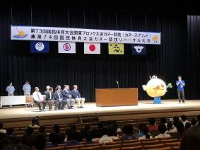

 今日7月8日（日）は、第73回国民体育大会関東ブロック大会が、茨城県神栖市にできた新カヌー会場で開催されました。この会場は、来年茨城県で開催される「いきいき茨城ゆめ国体2019」のカヌー会場となるところです。イメージキャラクターの「いばラッキー」が開会式に参加してくれました。
今日7月8日（日）は、第73回国民体育大会関東ブロック大会が、茨城県神栖市にできた新カヌー会場で開催されました。この会場は、来年茨城県で開催される「いきいき茨城ゆめ国体2019」のカヌー会場となるところです。イメージキャラクターの「いばラッキー」が開会式に参加してくれました。
今日の大会は、各都県を勝ち抜いてきた代表者だけが参加する大会ですのでどの競技も質の高いすばらしいものでした。多少風は強かったもののまずまずのコンディションで競技が行われてよかったです。参加した選手の諸君は得るものが多かったのではないでしょうか。今後に向けてステップアップのいい機会になったと思います。
今日7月8日（日）は、第73回国民体育大会関東ブロック大会が、茨城県神栖市にできた新カヌー会場で開催されました。この会場は、来年茨城県で開催される「いきいき茨城ゆめ国体2019」のカヌー会場となるところです。イメージキャラクターの「いばラッキー」が開会式に参加してくれました。今日の大会は、各都県を勝ち抜いてきた代表者だけが参加する大会ですのでどの競技も質の高いすばらしいものでした。多少風は強かったもののまずまずのコンディションで競技が行われてよかったです。参加した選手の諸君は得るものが多かったのではないでしょうか。今後に向けてステップアップのいい機会になったと思います。
歌声は世代を超えて


 今日は、佐倉高校同窓会である鹿山会の総会が開催されました。総会の会議終了後、本校の音楽部が「ア・カペラで行こう～佐倉高校音楽部＜鹿山会スペシャルステージ２０１８＞」と題して、その素晴らしいハーモニーを諸先輩方の前で披露してくれました。音楽部はア・カペラ・コーラスを中心にルネッサンス期の音楽から現代ポップスまで、幅広いジャンルの合唱に取り組んでおり、音楽を愛する心や伝統を受け継いで活動しています。今回のステージでは最後に参加者全員で合唱できるように校歌を選曲してくれました。世代を超えた校歌の響きは、いつもに増してすばらしいものでした。７０歳以上の差がある人たちが、心ひとつに歌える校歌の素晴らしさをあらためて感じました。素敵な時間を演出してくださった鈴木先生、秋保先生、音楽部の皆さん本当にありがとうございました。
今日は、佐倉高校同窓会である鹿山会の総会が開催されました。総会の会議終了後、本校の音楽部が「ア・カペラで行こう～佐倉高校音楽部＜鹿山会スペシャルステージ２０１８＞」と題して、その素晴らしいハーモニーを諸先輩方の前で披露してくれました。音楽部はア・カペラ・コーラスを中心にルネッサンス期の音楽から現代ポップスまで、幅広いジャンルの合唱に取り組んでおり、音楽を愛する心や伝統を受け継いで活動しています。今回のステージでは最後に参加者全員で合唱できるように校歌を選曲してくれました。世代を超えた校歌の響きは、いつもに増してすばらしいものでした。７０歳以上の差がある人たちが、心ひとつに歌える校歌の素晴らしさをあらためて感じました。素敵な時間を演出してくださった鈴木先生、秋保先生、音楽部の皆さん本当にありがとうございました。 関東大会0610－2
 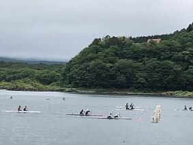
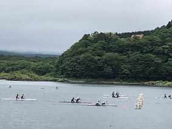


 お陰様で天候が危ぶまれましたが、競技中は、風はあったものの雨に降られることなく全日程を無事に終了することができました。関東高体連カヌー専門部の先生方、関東カヌー協会の皆さん精進湖観光協会の皆様ありがとうございました。選手の皆さんはとっても頑張ったと思います。関東大会に出場してレベルの高い競技を経験し、次のステップへの課題を見つけ、新たな目標に向かって今後の練習に生かせる多くの学びができたのではないでしょうか。いづれにしても本当にお疲れ様でした。
お陰様で天候が危ぶまれましたが、競技中は、風はあったものの雨に降られることなく全日程を無事に終了することができました。関東高体連カヌー専門部の先生方、関東カヌー協会の皆さん精進湖観光協会の皆様ありがとうございました。選手の皆さんはとっても頑張ったと思います。関東大会に出場してレベルの高い競技を経験し、次のステップへの課題を見つけ、新たな目標に向かって今後の練習に生かせる多くの学びができたのではないでしょうか。いづれにしても本当にお疲れ様でした。また、昨日から応援に来ていただいた保護者の皆様ありがとうございました。これからもよろしくお願いします。